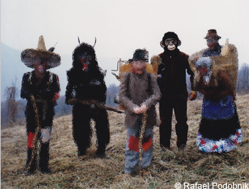

Opica

V skupini predstavlja nagajivo žival.
Liške maske spadajo med tradicionalne pustne maske na slovenskem. Izvirajo
iz okoliških vasi Liškega področja pod Kanalskim Kolovratom. Posebnost,
ki Liške maske loči od ostalih slovenskih mask je ta, da so narejene iz
pločevine. Najprej so bile narejene iz bakrene pločevine, danes pa so
iz aluminijaste pločevine.
Danes nadaljuje tradicijo izdelovanje liških mask Branko Žnidarčič.
Žnidarčič je pripravil tudi rekonstrukcijo mask iz 19. stoletja,
kot jih je v 50-letih zapisal in narisal slikar in etnolog Pavel Medvešček,
te maske so iz bakrene pločevine.